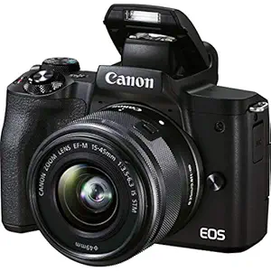
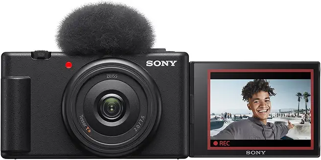
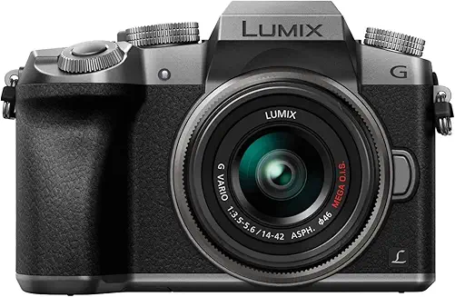
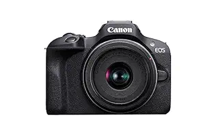
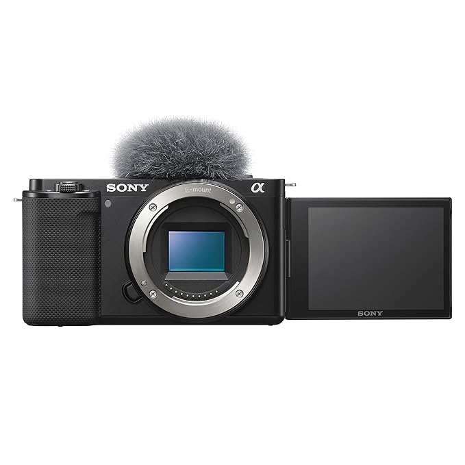
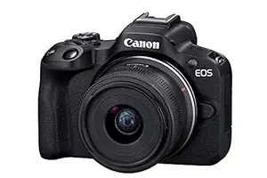
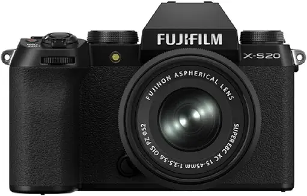

Find the best cameras for YouTube, vlogging, livestreaming, photography and professional video.
A good camera gives you sharp 4K video, clean autofocus and better low-light performance for YouTube and clients.
For creators, choose at least:
✔ 4K 30fps Video or better
✔ Flip Screen / Vlogging Screen
✔ Good Autofocus with Face/Eye Detection
✔ External Mic Input
✔ Interchangeable Lens or 1" Sensor
Affordable cameras for beginners, students and new YouTubers.

Best Budget
✔ 4K 24fps Video
✔ 24.1MP APS-C Sensor
✔ Flip Touchscreen
✔ Mic + Headphone Jack

Popular
✔ 4K Video
✔ 20MP 1" Sensor
✔ Built-in Windscreen
✔ Vlog Settings

Editor's Pick
✔ 4K Video
✔ 16MP Micro 4/3 Sensor
✔ Interchangeable Lens
✔ Mic Input

Top Choice
✔ 4K Video
✔ 24.1MP APS-C Sensor
✔ Dual Pixel AF
✔ Lightweight Body
Start with 4K and flip screen. Audio quality matters more than 8K.
Always check for 3.5mm mic input. Built-in mics are not enough for YouTube.
Buy 2 extra batteries. 4K drains battery fast during long shoots.
APS-C or 1" sensor is best for beginners. Bigger = better low light.
Ideal for serious YouTubers, wedding videographers and content creators.

Best Seller
✔ 4K 30fps Video
✔ 24.2MP APS-C Sensor
✔ Interchangeable Lens
✔ Vlogging Form Factor

Editor's Pick
✔ 4K 30fps Oversampled
✔ 24.2MP APS-C Sensor
✔ Dual Pixel CMOS AF II
✔ Mic + Headphone Jack

Creator Choice
✔ 6.2K Open Gate Video
✔ 26.1MP X-Trans Sensor
✔ IBIS Stabilization
✔ Film Simulations
If you're looking for the best value, the Canon EOS M50 Mark II is an excellent budget option. For serious YouTubers, the Sony ZV-E10 offers the best autofocus and vlogging features. If you want a professional camera for client work, the Sony A7 IV provides outstanding video quality and low light. Filmmakers should consider the Panasonic S5 II for 6K and pro codecs.
Compare popular cameras for creators, vloggers and professionals.
| Camera | Sensor | Video | AF System | Best For | Price |
|---|---|---|---|---|---|
| Canon M50 Mark II | 24MP APS-C | 4K 24fps | Dual Pixel AF | Beginners | ₹55K+ |
| Sony ZV-1F | 20MP 1" | 4K 30fps | Real-time AF | Vlogging | ₹48K+ |
| Sony ZV-E10 | 24MP APS-C | 4K 30fps | Real-time Eye AF | YouTubers | ₹68K+ |
| Fujifilm X-S20 | 26MP APS-C | 6.2K 30fps | AI AF | Creators | ₹1.12L+ |
| Sony A7 IV | 33MP Full Frame | 4K 60fps | Real-time Tracking | Professional | ₹2.20L+ |
| Canon R6 Mark II | 24MP Full Frame | 4K 60fps | Dual Pixel AF II | Filmmaking | ₹2.50L+ |
DSLR - Good battery life, optical viewfinder, cheaper lenses.
Mirrorless - Best autofocus, 4K video, smaller body. Best for creators.
Compact/Vlogging - Easy to use, great for YouTube. Fixed lens.
4K 30fps - Standard for YouTube.
4K 60fps - For slow motion and smoother footage.
10-bit Color - Better color grading for professional work.
External mic input is non-negotiable for YouTube audio quality.
A vari-angle screen makes self-recording and vlogging 10x easier.
Face/Eye autofocus keeps you sharp while moving. Sony and Canon lead here.
4K recording eats battery. Carry 2-3 spare batteries for full day shoots.
Canon EOS M50 Mark II and Sony ZV-1F are perfect for beginners. Affordable, 4K and easy to use.
No. 1080p is still fine. But 4K gives you cropping flexibility and looks more future-proof.
Mirrorless is better for video and autofocus in 2026. DSLR is only good if you already own lenses.
Not for starting. APS-C is enough for 90% of creators. Go full frame when you start getting paid work.
₹50,000 to ₹80,000 is the sweet spot. You get 4K, good AF and mic input in this range.
Start with 18-50mm kit lens. Then add a 50mm f/1.8 for portraits and blurry background.
Canon M50 Mark II, Sony ZV-1F and Panasonic G7 are best in this range.
Phones are great for short form. A real camera wins for 4K, audio, lenses and low light.
Some links on this page are affiliate links. If you purchase through these links, VidToolkit Pro may earn a small commission at no additional cost to you. Your support helps us keep creating free guides and reviews for content creators.
Find the perfect camera for YouTube, vlogging, editing and professional video.
Browse Creator Store →